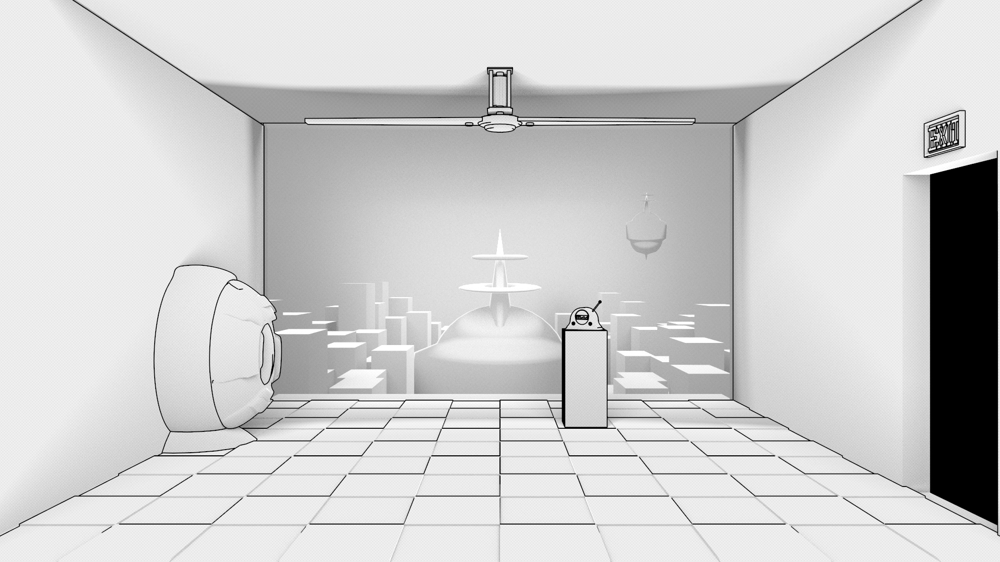
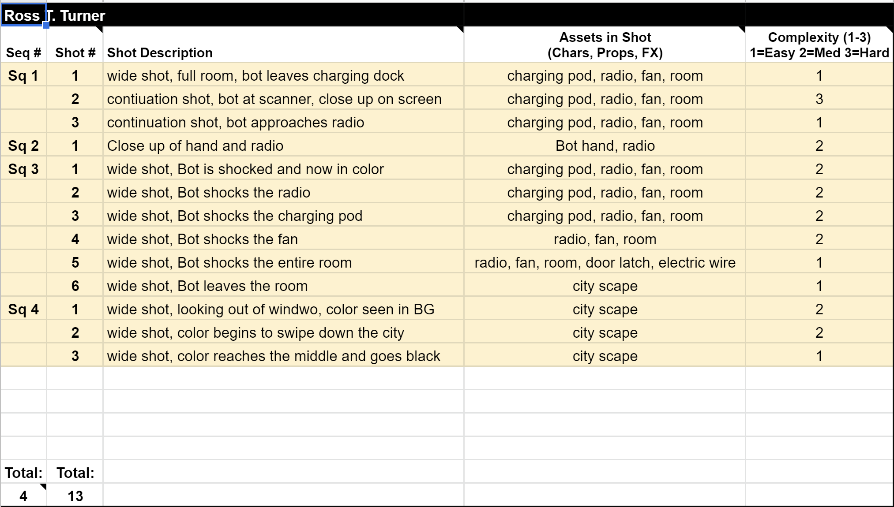
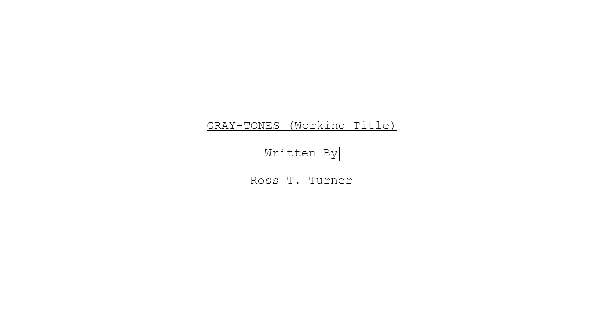
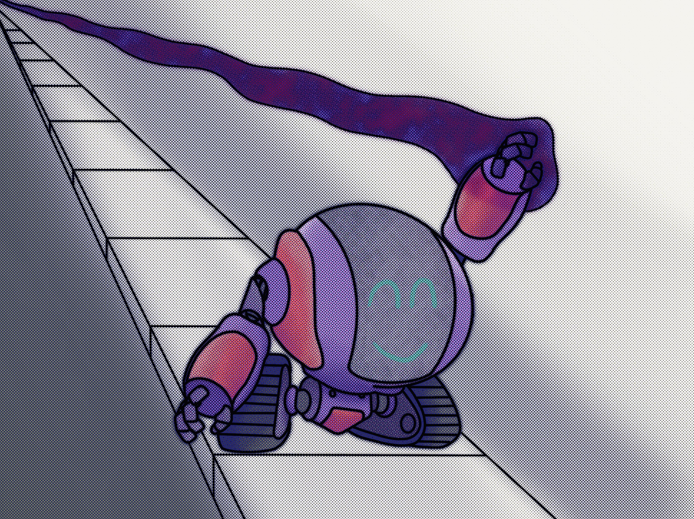

ACM 320 Blog

Feb 18 2021
Pre-Production Package
I finally finished my main character. I also was able to wrap up all of my assets including the back ground city scape that I was the most worried about. The city could still use some work but I think that it is okay to start animating and adding more detail to the textures. I have continued to run test renders to see how things are coming together and I have really liked the results so far. My script is finalized and I have completely filled out the pre-production package for class. From here on, I will be following the schedule that I layed out and I should be able to finsish with some time to spare. My package is estimating about 23 days of animation but I think that it will be much faster due to the fact that I have only a few different textures to create and the rigging is almost non-existant. I will be starting animations very soon and will post the test to here.

Feb 12 2021
Pre-Production
I have been working on my character model again. I have been struggling with getting the right look for the main robot. I think that I am close to it with my current version, so I have decided to move on for now and maybe it will look more correct when I finish my initial scenes. I have started building out all the rest of my models. They do not have a lot of detail so making them should be fairly quick. I also fully filled out my pre-production document and have a good schedule to follow. My schedule is estimating 23 days of animations but I think that I will be able to speed up several areas of the pipeline because so many items are simply designed and utilize the same textures. I also only have one character to rig and even the robot has very little that will actually need to be rigged.

Jan 28 2021
Animation Script
Gray-Tones (Working Title) - ScriptI had to change my original story plan as I was writing the script out. I realized that I was trying to do to much and would not be able to complete it within 1 minute. Anything over one minute would be cutting it to close to finishing within the semester, so I tried to think about what else I could do and tell the same story. I decided to only use one set and then have the ending take place from our view through the window on the set. I hope that it still seems playful at the end without the use of the outside world being fully built. I also decided to include some dialogue in the form of a radio announcer as I thought it was lacking something. This also gave me a better way to introduce the inital shock to the character and I think that it plays out better now.
Jan 20 2021
Testing Color Swipe Effect
I have been runing various test trying to figure out how to animated one color being taken over by another. Using the two different textures with a mix node and then using a ramp to control the mix, plus applying noise, keyframe the values of the ramp and show this swirl effect. I think this will be the best way to do simple color swaps while rendering. I have also started looking into After Effects to see if I can just render the entire film in black and white and then again in color. I could then use After Effects and masking to handle all the color swaps in post and also come up with some neat tracking color swaps so that the robot can do more then just instant change the color of something. Just an idea right now.
Jan 18 2021
Final Character Design and Shader
Designing out the robot was pretty simple. He is made of of very basic shapes and should be very easy to rig. Two problem areas with this design are going to be how to animate the wheels going around when they are an odd shape and the face design moving with the body. The face is unique because it is made from a MASH node, MASH nodes are super useful but I am not sure how they work with animating. I have completed test in the past for animating a face in MASH but never having the entire MASH network move along with a character. Finally, I needed to work on the style for my film. I took inspiration from the latest Spiderman and decided on a Halftone Toon Shader texture. This was not as easy as the modeling phase as I had to build the entire texture from scratch. There is a built in Halftone texture in Maya but sadly will not work with Arnold and it also did not look as nice as what I was able to achieve in the end. I tied everything together in the end with a color ramp that allowed me to have the toon shader effect with different sized halftones depending on the color. I think this will work well for my film.

Jan 15 2021